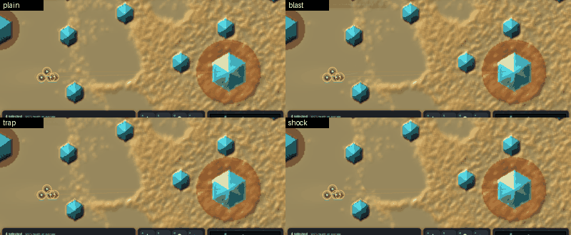

<title>Larder World Rounds</title>
<meta name="claude:viewport-fit-sides" content="cover">
<link rel="stylesheet" href="https://fonts.googleapis.com/css2?family=Chakra+Petch:wght@500;600&family=IBM+Plex+Sans:wght@400;500&family=IBM+Plex+Mono:wght@400&display=swap">
<style>
/* Layout: one column of findings, then a grid of dish clips, each with its numbers beside it. Single dark theme, chosen to match the dish render. */
:root{
  --bg:#0b1115; --panel:#121b21; --line:#24323b; --fg:#dfe7ea; --muted:#8fa2ab;
  --slime:#e7b25a; --crystal:#8fe3f2; --bad:#e2735d; --good:#8fd39a;
  --display:"Chakra Petch",system-ui,sans-serif; --body:"IBM Plex Sans",system-ui,sans-serif; --mono:"IBM Plex Mono",ui-monospace,monospace;
  color-scheme:dark;
}
body{background:var(--bg);color:var(--fg);font:15px/1.55 var(--body);padding-left:max(16px,env(safe-area-inset-left,0px));padding-right:max(16px,env(safe-area-inset-right,0px));padding-block:28px 48px}
main{max-width:1100px;margin:0 auto;display:flex;flex-direction:column;gap:28px}
h1,h2{font-family:var(--display);font-weight:600;text-wrap:balance;margin:0}
h1{font-size:2rem;color:var(--slime)}
h2{font-size:1.25rem}
p{margin:0;max-width:68ch}
.lede{display:flex;flex-direction:column;gap:10px}
.muted{color:var(--muted)}
code,.mono{font-family:var(--mono);font-size:.86em}
.wrap{overflow-x:auto}
table{border-collapse:collapse;font-variant-numeric:tabular-nums;font-size:.9rem;min-width:620px}
th,td{padding:6px 10px;border-bottom:1px solid var(--line);text-align:right;white-space:nowrap}
th:first-child,td:first-child{text-align:left}
th{font-family:var(--display);font-weight:500;color:var(--muted);letter-spacing:.04em;text-transform:uppercase;font-size:.75rem}
td.hi{color:var(--good);font-weight:500}
section{display:flex;flex-direction:column;gap:12px}
.grid{display:grid;grid-template-columns:repeat(auto-fill,minmax(min(100%,500px),1fr));gap:18px}
figure{margin:0;background:var(--panel);border:1px solid var(--line);border-radius:6px;overflow:hidden;display:flex;flex-direction:column}
figure img{display:block;width:100%;height:auto;image-rendering:pixelated}
figcaption{padding:10px 12px;display:flex;flex-direction:column;gap:6px}
.name{font-family:var(--display);font-weight:600;font-size:1.05rem;display:flex;gap:10px;align-items:baseline;flex-wrap:wrap}
.cards{font-family:var(--mono);font-size:.8rem;color:var(--crystal)}
dl{display:grid;grid-template-columns:repeat(auto-fit,minmax(110px,1fr));gap:4px 14px;margin:0;font-variant-numeric:tabular-nums}
dt{font-size:.7rem;text-transform:uppercase;letter-spacing:.05em;color:var(--muted)}
dd{margin:0;font-family:var(--mono);font-size:.88rem}
.bad{color:var(--bad)} .good{color:var(--good)}
ul{margin:0;padding-left:1.2em;max-width:68ch;display:flex;flex-direction:column;gap:6px}
</style>
<main>
<div class="lede">
  <h1>Rounds in Larder World</h1>
  <p>A round is a soldier's ammo: up to four cards read left to right. Payloads (blast, gas, germ) do something to the mould; modifiers (wide, scatter, quiet) and triggers (delay, thick) change the next payload. Shots stay free; each payload costs its kit price from the bank, and every card slows the recharge (2 s, plus 1 per payload, 0.5 per other card).</p>
  <p class="muted">CPU race world, farm hand on Defend, 300 s cap, seeds 5 to 12 paired. Clips are seed 5 from 240 s to 300 s; white dots are soldiers, gold is the mould, blue hexagons are crystals.</p>
</div>

<section>
  <h2>In the game window: four loadouts, one fight</h2>
  <p>The GPU game (<code>larder-world -- map=flats rounds=NAME hand=rush</code>), seed 1, 8 to 32 s, same camera. Each round's craters and kill holes are the mould itself. Plain shots lose the squad by 24 s; blast and trap keep one soldier to 32 s.</p>
  <figure><figcaption><div class="wrap"><table>
    <thead><tr><th>Loadout</th><th>Soldiers 8 / 16 / 24 / 32 s</th><th>Mould at 24 s</th><th>Casts by 32 s</th><th>Food spent</th></tr></thead>
    <tbody>
      <tr><td>plain</td><td>4 / 1 / 0 / 0</td><td>25,654</td><td>0</td><td>0</td></tr>
      <tr><td>blast</td><td>4 / 4 / 1 / 1</td><td>23,297</td><td>20</td><td>1,200</td></tr>
      <tr><td>trap (thick, wide, blast)</td><td>4 / 4 / 1 / 1</td><td>21,481</td><td>14</td><td>840</td></tr>
      <tr><td>shock (scatter, blast, wide, blast)</td><td>4 / 4 / 0 / 0</td><td>22,522</td><td>16</td><td>960</td></tr>
    </tbody></table></div></figcaption></figure>
  <p class="muted">One seed, a look and not a test. The default mould grew to about 25,000 walkers on 11-13, so on the Fork map every loadout loses the squad within 20 s; the Flats map is where the difference shows.</p>
</section>

<section>
  <h2>What the census says</h2>
  <ul>
    <li><b>The germ wins on every tier except the Sleeper.</b> Germ and plague (germ, delay, blast) beat no round 8 of 8 seeds on the plain mould, the Swarmer and the Sporer, and roughly double the score. With 8 seeds the best possible sign test is p 0.0078, which does not survive Holm over 9 comparisons, so these are strong but uncorrected.</li>
    <li><b>Everything else is close to a plain gun.</b> Blast, gas, trap and lull move the score by 0.01 to 0.03. Trap beat no round 8/0 on the Swarmer; nothing else is clear.</li>
    <li><b>The Sleeper shrugs everything off.</b> All loadouts score 0.250 to 0.255.</li>
    <li><b>The counter-play test fails.</b> The bar was a different best loadout on 3 or more tiers. One loadout family (germ) wins almost everywhere, so as tuned the cards are mostly a better gun.</li>
    <li><b>Frame cost.</b> No round runs 3.7 to 5.9 ms a tick on the CPU; a blast round 5 to 7 ms (it turns the alarm field on); germ 8 to 9 ms; plague 15 ms.</li>
  </ul>
  <div class="wrap"><table>
    <thead><tr><th>Mean score</th><th>none</th><th>blast</th><th>gas</th><th>germ</th><th>trap</th><th>lull</th><th>plague</th><th>random</th></tr></thead>
    <tbody>
      <tr><td>Plain mould</td><td>0.223</td><td>0.249</td><td>0.224</td><td class="hi">0.589</td><td>0.237</td><td>0.234</td><td class="hi">0.572</td><td>0.231</td></tr>
      <tr><td>Swarmer</td><td>0.222</td><td>0.226</td><td>0.229</td><td class="hi">0.462</td><td>0.240</td><td>0.231</td><td class="hi">0.466</td><td>0.227</td></tr>
      <tr><td>Sporer</td><td>0.165</td><td>0.195</td><td>0.194</td><td class="hi">0.440</td><td>0.178</td><td>0.195</td><td class="hi">0.464</td><td>0.185</td></tr>
      <tr><td>Sleeper</td><td>0.251</td><td>0.254</td><td>0.253</td><td>0.251</td><td>0.254</td><td>0.253</td><td>0.250</td><td>0.255</td></tr>
    </tbody>
  </table></div>
  <p class="muted">Drifter tier, stopped at 3 seeds: every loadout 0.347 to 0.360, nothing clear. Random draws 1 to 4 cards per seed; 4 of its 8 draws had no payload, so it is a weak control and should redraw until it has one.</p>
</section>

<section>
  <h2>A mould that resists the germ</h2>
  <p>Resistance is a mould trait already in the engine: a walker only catches the germ where the germ field is over the catch level times the resistance. Swarmer and Sporer, seeds 5 to 8, 300 s:</p>
  <div class="wrap"><table>
    <thead><tr><th>Mean score</th><th>none</th><th>blast</th><th>germ</th><th>plague</th></tr></thead>
    <tbody>
      <tr><td>Swarmer, resistance 1 (today)</td><td>0.222</td><td>0.226</td><td class="hi">0.462</td><td class="hi">0.466</td></tr>
      <tr><td>Swarmer, resistance 3</td><td>0.223</td><td>0.229</td><td class="hi">0.375</td><td>&ndash;</td></tr>
      <tr><td>Swarmer, resistance 10</td><td>0.223</td><td>0.229</td><td>0.222</td><td>0.233</td></tr>
      <tr><td>Sporer, resistance 1 (today)</td><td>0.165</td><td>0.195</td><td class="hi">0.440</td><td class="hi">0.464</td></tr>
      <tr><td>Sporer, resistance 3</td><td>0.158</td><td>0.193</td><td class="hi">0.226</td><td>&ndash;</td></tr>
      <tr><td>Sporer, resistance 10</td><td>0.158</td><td class="hi">0.193</td><td>0.174</td><td>0.178</td></tr>
    </tbody>
  </table></div>
  <p class="muted">Resistance 1 is the 8-seed census above; 3 and 10 are 4 seeds each, so these are a quick check, not a test. At 10 the germ does nothing and blast is best on the Sporer. At 3 the germ still helps but no longer doubles the score. So resistance is a dial: a campaign can give each mould its own level and the germ card becomes good against some and wasted on others.</p>
  <div class="grid" id="resist"></div>
</section>

<section>
  <h2>Plain mould, seed 5</h2>
  <div class="grid" id="plain"></div>
</section>
<section>
  <h2>Swarmer, seed 5</h2>
  <div class="grid" id="swarm"></div>
</section>
</main>
<script>
const clips={
 plain:[
  ["none","No round","none",{score:"+0.286",mould:"3380",kills:"0",spent:"0",ms:"3.70"}],
  ["blast","Blast","blast",{score:"+0.300",mould:"3024",kills:"1239",spent:"14940",ms:"6.57"}],
  ["shock","Shock","scatter+blast+wide+blast",{score:"+0.278",mould:"3626",kills:"1972",spent:"12420",ms:"6.96"}],
  ["trap","Trap","thick+wide+blast",{score:"+0.298",mould:"3103",kills:"397",spent:"9720",ms:"6.22"}],
  ["lull","Lull","quiet+gas+quiet+blast",{score:"+0.289",mould:"3339",kills:"374",spent:"26760",ms:"6.58"}],
  ["germ","Germ","germ",{score:"+0.485",mould:"61",kills:"0",spent:"26400",ms:"8.98"}],
  ["plague","Plague","germ+delay+blast",{score:"+0.483",mould:"81",kills:"71",spent:"26520",ms:"15.13"}],
 ],
 swarm:[
  ["none","No round","none",{score:"+0.296",mould:"3171",kills:"0",spent:"0",ms:"5.87"}],
  ["blast","Blast","blast",{score:"+0.261",mould:"4102",kills:"1819",spent:"11820",ms:"5.11"}],
  ["trap","Trap","thick+wide+blast",{score:"+0.300",mould:"3050",kills:"1009",spent:"6060",ms:"5.56"}],
  ["lull","Lull","quiet+gas+quiet+blast",{score:"+0.259",mould:"4183",kills:"505",spent:"24660",ms:"4.87"}],
 ],
 resist:[
  ["germ","Germ, resistance 1","germ",{score:"+0.484",mould:"86",kills:"0",spent:"25500",ms:"16.63"}],
  ["germ-resist10","Germ, resistance 10","germ",{score:"+0.264",mould:"4084",kills:"0",spent:"26400",ms:"13.59"}],
 ]};
const pre={plain:"none",swarm:"swarmer",resist:"swarmer"};
for(const k in clips){const g=document.getElementById(k);
 for(const [f,n,c,s] of clips[k]){const fig=document.createElement("figure");
  fig.innerHTML=`<figcaption><div class="name">${n}<span class="cards">${c}</span></div><dl><div><dt>Score</dt><dd>${s.score}</dd></div><div><dt>Mould at 300 s</dt><dd>${s.mould}</dd></div><div><dt>Round kills</dt><dd>${s.kills}</dd></div><div><dt>Food spent</dt><dd>${s.spent}</dd></div><div><dt>ms a tick</dt><dd>${s.ms}</dd></div></dl></figcaption>`;
  g.appendChild(fig);}}
</script>
